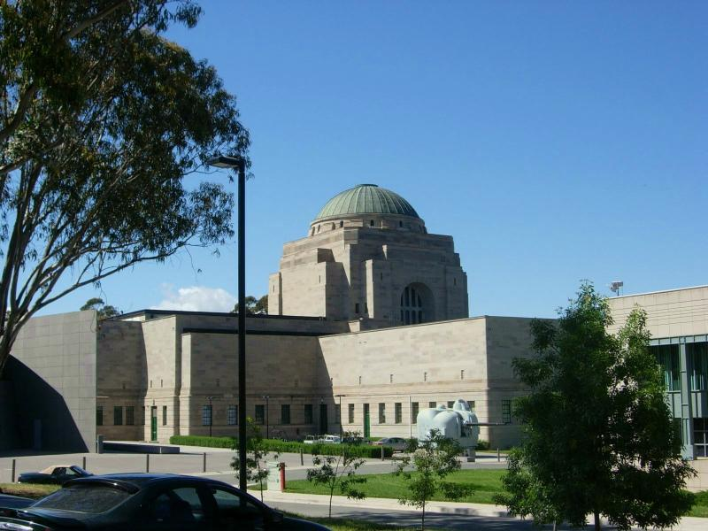
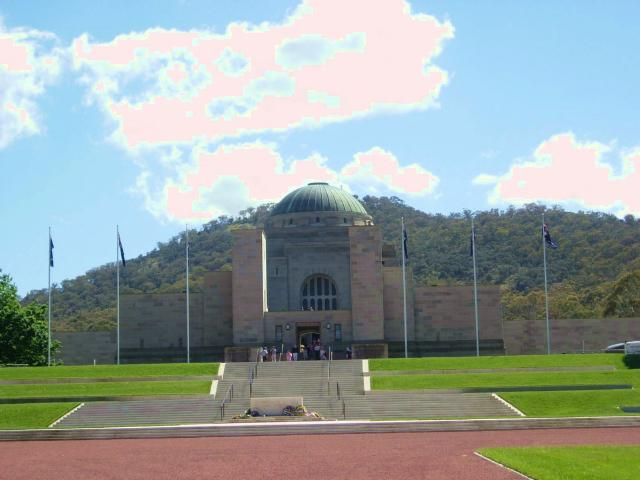
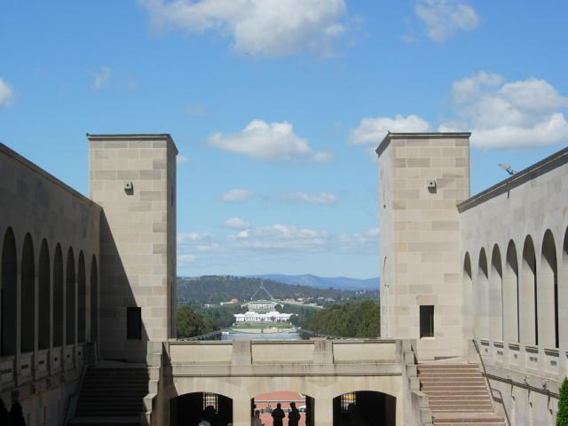
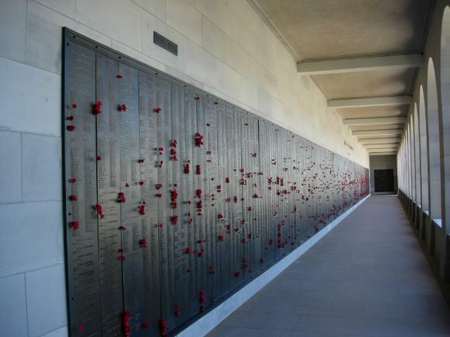
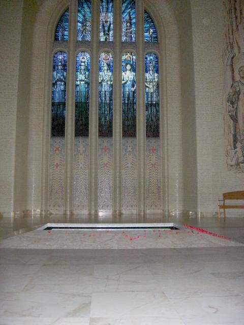
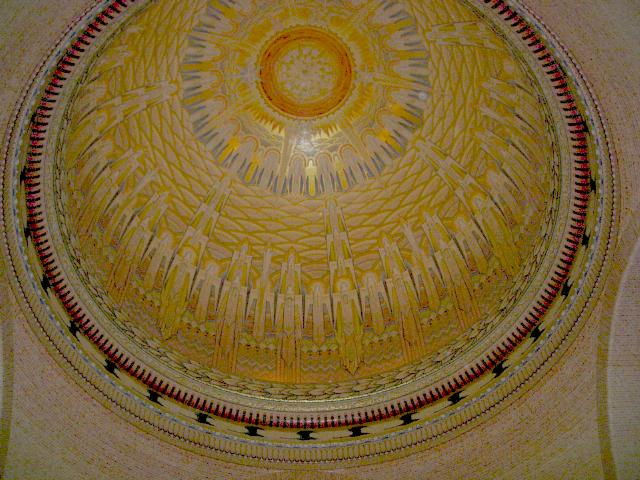
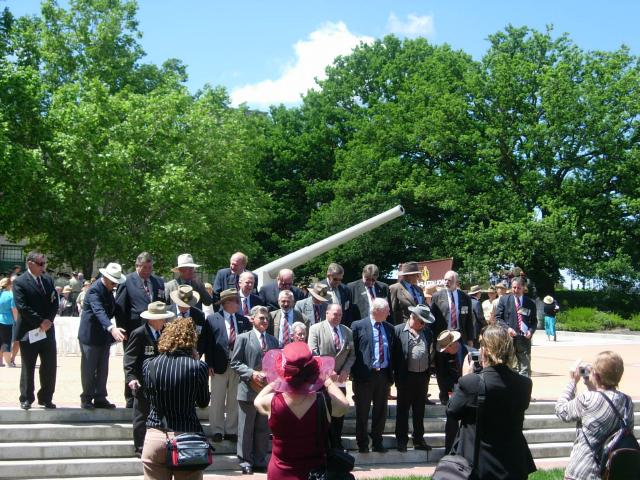
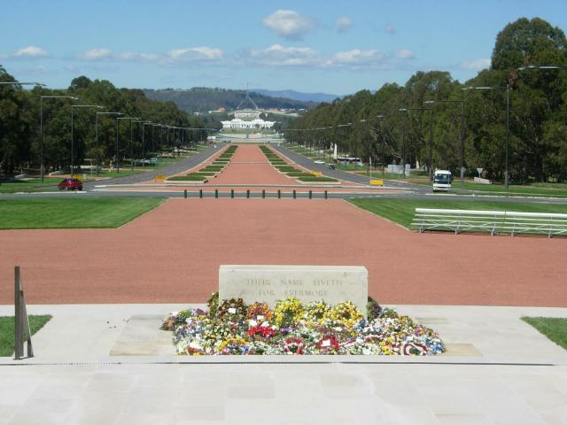

-=War Memorial=-

The War Memorial is a magnificent Beaux Arts building that reminds me of the Griffith Park Planetarium in Los Angeles.

Here's the building from the front. The red gravel symbolizes the redrock country in the center of the continent.

Parliment from the second story of the Memorial. It's down the red path and across the Molonglo.

One of three walls. Every known casulty is listed beginning with the Great War.

Tomb of the Unknown lies under the dome.

The dome has a small hole at top that causes sunlight to shine on the tomb at 11AM, November 11 (Remembrence Day)

Vietnam vets reunion. This was a really different scene from the wasted bikers at Rolling Thunder.

Flowers from Remembrance Day, perhaps most significantly from Turkey. One of my co-CSCers from DC tells me that the troops 33% mortality rate at Gallipoli would have been 50% if they'd been sent to Aman, as originally planned.
The exhibits were very well done, including a multimedia simulation of a bombing run from the POV of the pilot. The cumulative effect was naturally somewhat depressing. There was a pic of a Japanese civilian interpreter beheading a Aussie, along with a one-page diary entry about how his flawless technique must have raised his status (his only reaction). For about three hours, I badly needed to kill Japanese civilians and used flamethrowers on the soldiers. My gut instincts are somewhere back in the Kali yuga.